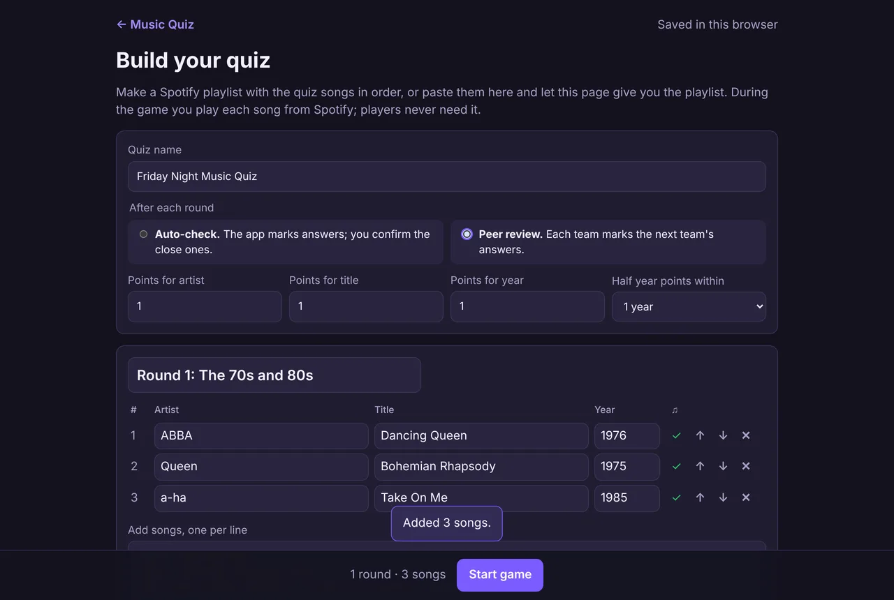
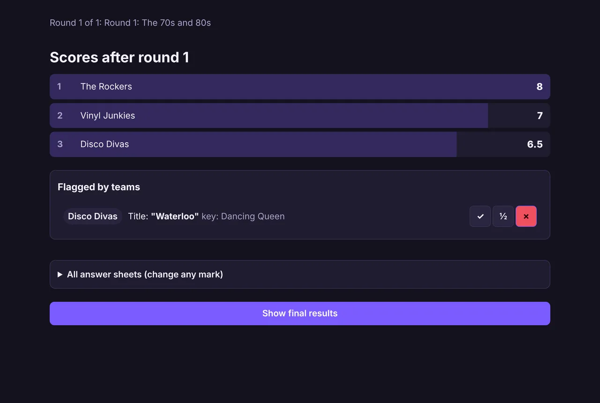
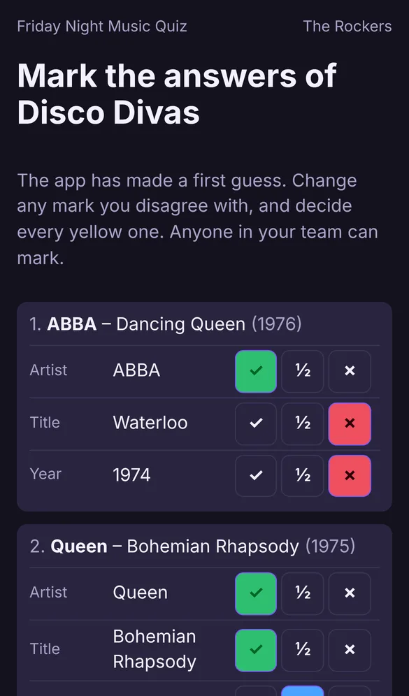

Track Night
Host a music quiz night. Everyone plays on their phone.
Track Night turns any living room, office or pub into a music quiz. You build the quiz from your favourite songs and play them from your own Spotify, while teams join with a 4-letter code and answer artist, title and year on their phones. Answers are checked for you, or teams mark each other's sheets, and the scoreboard keeps itself.
How a Track Night works
One laptop or TV for the quiz master, one phone per player. Nobody needs to download anything or make an account to play.
- 1
Build your quiz
Paste songs as "Artist - Title" or as Spotify links, split them into rounds like "80s hits" or "Film music", and add your own questions.
- 2
Teams join
Players scan the QR code or type the 4-letter code on their phone, pick a nickname and join or start a team.
- 3
Play and score
You play each song from your own Spotify. Teams answer on their phones, and after each round the answers are checked and the scoreboard updates.
See it in action
Screens from the current web version.



Made for a real quiz night
Everything a quiz master needs, and nothing players have to install.
- Forgiving answer checkingTypos, "The", accents and "feat." are handled. Close calls go to you, and years within one year earn half points.
- Peer review modeEach team marks the next team's sheet, and teams can flag a mark for the quiz master to decide.
- Your own questionsAdd questions like "Which film?" or "How many Oscars?" to any round, with their own points.
- A library of quizzesKeep as many quizzes as you like, duplicate last month's, or save one as a file to share.
- Release years looked up for youFill in missing years from MusicBrainz, using the first release rather than the remaster.
- Answers stay hiddenPlayers never receive the answer key, and the host screen keeps it hidden until you choose to show it.
Support
Questions, bug reports or ideas for the next version are all welcome.
Privacy
No accounts, no ads and no analytics. Quizzes are saved in your own browser, and game data is deleted when the game ends.
Read the privacy policyDo players need to download an app?
No. Players join in their phone's web browser with the 4-letter code or the QR code. An iPhone app is planned as well.
Do I need Spotify Premium?
Track Night doesn't connect to Spotify, so you only need a way to play the quiz songs in order on your own speaker. The app exports Spotify links and a plain song list for that.
When is it out?
Track Night is in development. The web version comes first, then the iPhone app. Email to hear when it launches.
Where are my quizzes saved?
In the browser you built them in. Clearing your browser data removes them, so save a quiz file to keep a copy or move it to another computer.